웹앱, 이렇게 쓰시면 됩니다
이 앱을 처음 활용하시는 선생님을 위한 안내입니다. 수업 하루 전 준비부터 수업이 끝난 뒤 정리까지, 하시는 순서 그대로 적었습니다. 잘 안 될 때 볼 곳도 뒤에 담았습니다.
수업 한 시간이 이렇게 흘러갑니다
| 언제 | 누가 | 무엇을 하나요 |
|---|---|---|
| 하루 전 | 선생님 | 앱을 열어 둘러보기로 끝까지 해 봅니다. 기기 수와 인터넷을 확인합니다. |
| 수업 시작 3분 | 선생님 | 선생님 화면 → 새 방 만들기를 누르고, 나온 여섯 자리 방 번호를 칠판에 적습니다. |
| 이어서 2분 | 학생 | 같은 주소를 열어 방 번호와 별명을 넣고 입장하기를 누릅니다. |
| 수업 중 | 학생 | 화면에 나오는 순서대로 활동하고, 다 하면 제출하기를 누릅니다. |
| 정리 5분 | 선생님 | 결과 크게 띄우기로 학급 결과를 함께 봅니다. |
| 수업 뒤 | 선생님 | 방 잠그기를 누릅니다. 기록이 필요하면 CSV 내려받기를 함께 씁니다. |
기기가 없어도 수업은 됩니다. 앱은 거들 뿐이고, 수업의 중심은 아이들의 생각입니다.
차시마다 AI를 쓰지 않는 대안 활동을 지도안에 함께 적어 두었습니다.
1. 수업 하루 전 (5분)
- 앱을 열어 혼자 해 봅니다. 차시 카드에서 그 차시 앱을 열고 둘러보기를 누릅니다. 별명을 적지 않아도 바로 들어갑니다. 이때 넣은 것은 저장되지 않습니다.
- 끝까지 눌러 봅니다. 학생이 어디에서 멈출지 미리 알 수 있습니다. 한 차시 앱은 대개 5분에서 8분이면 끝까지 해 볼 수 있습니다.
- 기기를 헤아려 둡니다. 한 사람에 한 대가 아니어도 됩니다. 모둠에 한 대로도 할 수 있습니다.
- 주소를 미리 열어 둡니다. 학교 태블릿이라면 즐겨찾기에 넣어 두시면 수업 시간이 절약됩니다.
2. 수업을 시작할 때 (3분)
- 앱 첫 화면에서 선생님 화면을 누릅니다.
- 선생님 비밀번호 네 자리를 정해서 넣습니다. 이 화면을 다시 열 때만 씁니다. 학생에게는 알려 주지 않습니다. 잊어버리면 방을 새로 만들면 됩니다.
- 새 방 만들기를 누릅니다. 여섯 자리 방 번호가 나옵니다.
- 방 번호를 칠판에 크게 적습니다. 복사를 눌러 주소를 함께 나눠 주어도 됩니다.
- 학생에게 알려 줄 것은 주소와 방 번호 두 가지뿐입니다.
학생 화면에서 묻는 것은 방 번호와 별명, 모둠(비워도 됨)입니다.
이름, 학교, 학년, 반, 전화번호는 묻지 않습니다.
내 번호 네 자리는 앱이 자동으로 만들어 채워 둡니다. 학생이 외울 필요가 없습니다.
3. 수업 중에 선생님 화면에서 하는 일
| 무엇을 누르나 | 하는 일 | 언제 쓰나 |
|---|---|---|
| 제출 현황 N명 | 지금까지 제출한 사람 수를 보여 줍니다 | 활동 중에 진행 상황을 볼 때 |
| 새로고침 | 가장 최근 제출까지 다시 불러옵니다 | 제출 수가 늘지 않아 보일 때 |
| 결과 크게 띄우기 | 학급 결과를 큰 화면에 띄웁니다 | 정리 단계에서 다 함께 볼 때 |
| 한 명씩 보기 | 누가 무엇을 냈는지 표로 봅니다 | 개별 지도가 필요할 때만 |
| CSV 내려받기 | 제출 내용을 파일로 내려받습니다 | 수업 뒤 기록으로 남길 때 |
| 방 잠그기 | 더 이상 새 제출을 받지 않습니다 | 수업이 끝났을 때 |
선생님 화면은 다시 열 수 있습니다. 선생님 화면 → 기존 방 열기에 방 번호를 넣으면 됩니다.
4. 학생 화면은 이렇게 이어집니다
- 들어가기에서 방 번호와 별명을 넣고 입장하기를 누릅니다.
- 활동이 순서대로 열립니다. 앞 단계를 마쳐야 다음이 열리는 차시가 있습니다. 막힌 칸을 누르면 무엇을 먼저 해야 하는지 앱이 데려다 줍니다.
- 쓴 내용은 기기에 자동으로 저장됩니다. 화면을 잘못 닫아도 다시 들어오면 이어서 합니다.
- 다 하면 아래쪽 제출하기를 누릅니다. 빈 곳이 있으면 앱이 무엇이 남았는지 알려 줍니다.
- 제출한 뒤에도 고쳐서 다시 제출할 수 있습니다.
화면 맨 위 메뉴는 늘 보입니다. 홈, 둘러보기, 그 차시 페이지, 설문으로 갈 수 있고, 처음부터를 누르면 이 기기에 저장된 내용을 지우고 다시 시작합니다.
5. 사전·사후 설문 운영
같은 여덟 문항을 1차시 전과 12차시 뒤에 묻습니다. 열두 시간의 변화를 보는 자료입니다.
- 사전 설문 방을 하나 만들어 학급 전체가 들어옵니다. 학생은 사전을 고르고 답합니다.
- 사전을 마치면 선생님 화면 아래 이어보기 명단(별명과 번호)이 생깁니다. 한 번 인쇄해 두십시오. 열두 주 뒤의 보험입니다.
- 12차시 뒤에는 같은 방 번호를 다시 열어 학생이 사후를 고르고 답합니다.
번호를 외우게 하지 않습니다. 앱이 번호를 자동으로 만들고 기기에 기억합니다.
기기가 바뀌어도 학생이 사전 때 쓰던 별명을 그대로 쓰면, 사후에서 앱이 그 기록을 찾아 저절로 이어 줍니다.
둘 다 안 되면 인쇄해 둔 이어보기 명단에서 번호를 찾아 넣어 주면 됩니다.
번호가 없어도 답은 학급 평균에 그대로 들어갑니다.
6. 기기가 모자랄 때
| 상황 | 이렇게 합니다 |
|---|---|
| 기기가 모둠당 한 대 | 한 명이 조작하고 나머지가 함께 판단합니다. 별명은 모둠 이름으로 씁니다. |
| 교사 기기 한 대뿐 | 화면을 크게 띄워 함께 판단하고, 각자의 기록은 활동지에 손으로 남깁니다. |
| 인터넷이 끊겼을 때 | 활동은 그대로 되고 제출만 되지 않습니다. 인쇄용 활동지로 대신합니다. |
| 학교망에서 막힐 때 | 영상이나 바깥 자료가 열리지 않으면 참고자료에서 다른 자료로 바꿉니다. |
7. 잘 안 될 때
| 이런 일이 생기면 | 이렇게 합니다 |
|---|---|
| 학생이 방 번호를 넣어도 들어가지지 않아요 | 여섯 자리가 맞는지, 방을 잠그지 않았는지 봅니다. 잠갔으면 새 방을 만듭니다. |
| 제출했는데 선생님 화면에 보이지 않아요 | 새로고침을 누릅니다. 학생과 선생님이 같은 방 번호인지 확인합니다. |
| 학생 화면이 멈춘 것 같아요 | 같은 곳을 여러 번 누른 경우가 많습니다. 잠시 기다리면 이어집니다. |
| 기록을 지우고 다시 하고 싶어요 | 맨 위 메뉴의 처음부터를 누릅니다. 그 기기에 저장된 내용만 지워집니다. |
| 선생님 비밀번호를 잊었어요 | 새 방을 만들면 됩니다. 앞 방의 기록은 그대로 남아 있습니다. |
| 학생이 자기 별명을 잊었어요 | 아무 별명이나 다시 써도 활동에는 지장이 없습니다. 이어보기만 안 될 뿐입니다. |
8. 개인정보에 대한 약속
- 이름, 사진, 학교, 학년, 반, 전화번호를 묻지 않습니다.
- 저장하는 것은 별명과 답뿐입니다.
- 설문 결과는 학급 집계만 보여 줍니다. 개인 응답은 관리자 화면에도 뜨지 않습니다.
- 모인 자료는 수업 프로그램을 고치는 데만 쓰고 학년도가 끝나면 지웁니다.
9. 해 보시고 알려 주세요
화면 오른쪽 아래 함께 고치기 단추는 사이트 어느 쪽에서나, 그리고 학생이 웹앱을 하는 중에도 늘 떠 있습니다. 하던 화면을 떠나지 않고 그 자리에서 보냅니다.
| 갈래 | 이런 것을 보냅니다 |
|---|---|
| 오류나 문제점 | 안 되는 곳, 헷갈리는 곳 |
| 결과 제출 | 해 보니 어땠는지, 아이들이 무엇을 만들었는지 |
| 활동 사진 | 화면이나 결과물 사진 (최대 세 장) |
학생도 보낼 수 있습니다. 이름도 연락처도 묻지 않습니다. 사진을 넣을 때는 친구 얼굴과 이름이 보이지 않는지 한 번 확인받습니다.
차시별 안내
차시를 누르면 그 앱의 화면, 활동 순서, 발문, 자료가 나옵니다.
 1차시데이터 실험실AI는 어떻게 똑똑해질까
1차시데이터 실험실AI는 어떻게 똑똑해질까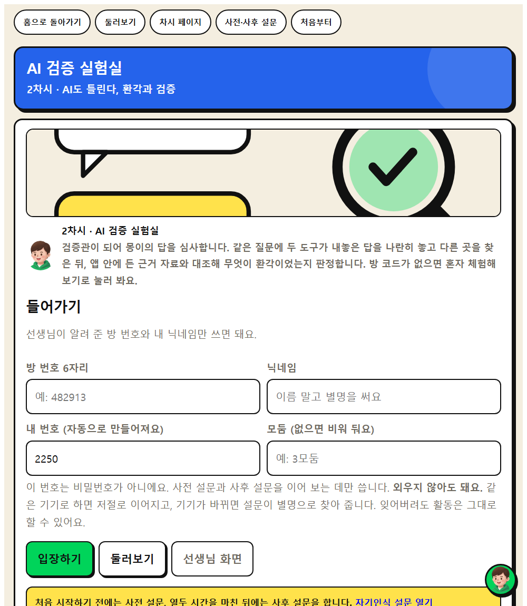
2차시AI 검증 실험실AI도 틀린다, 환각과 검증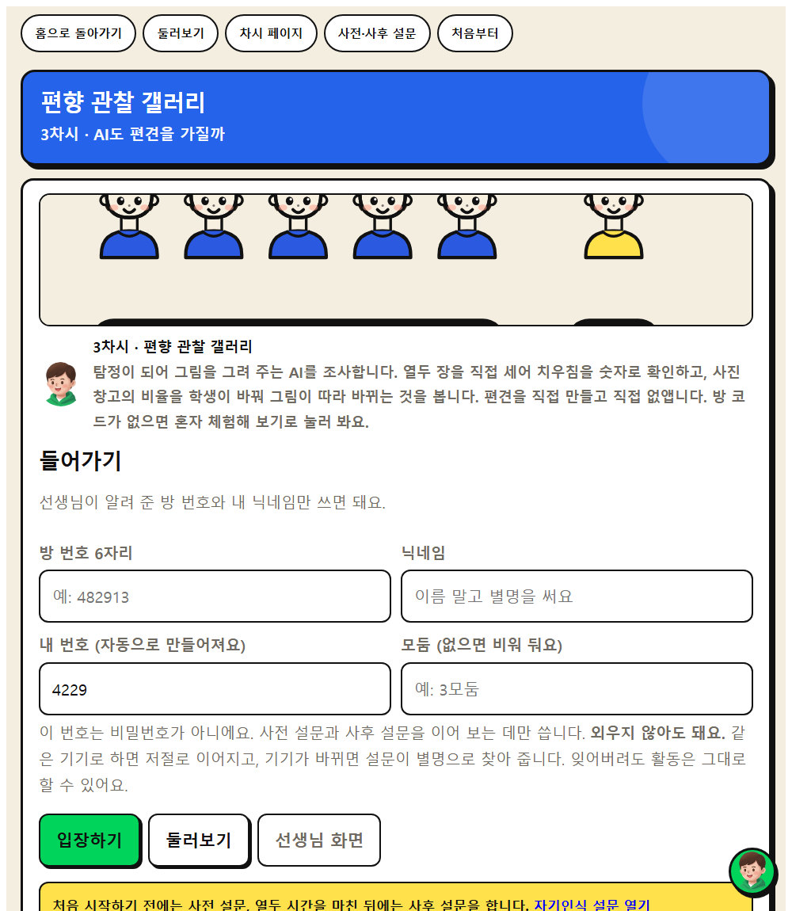
3차시편향 관찰 갤러리AI도 편견을 가질까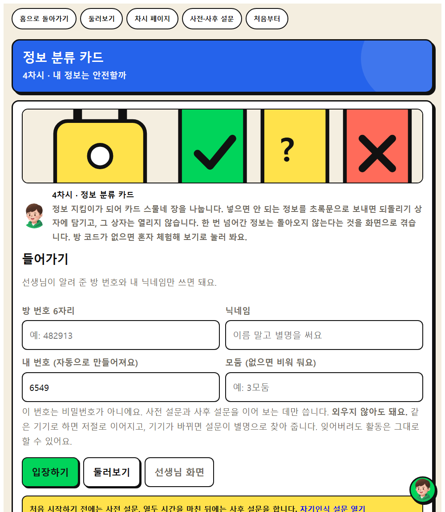
4차시정보 분류 카드내 정보는 안전할까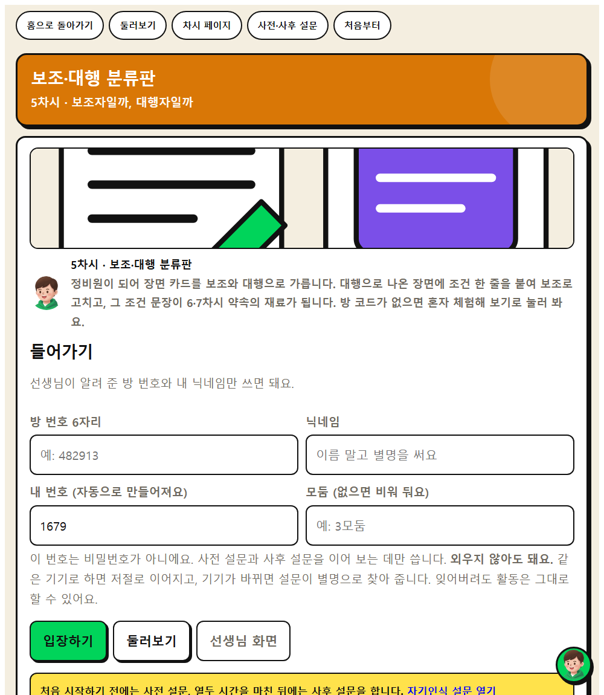
5차시보조·대행 분류판보조자일까, 대행자일까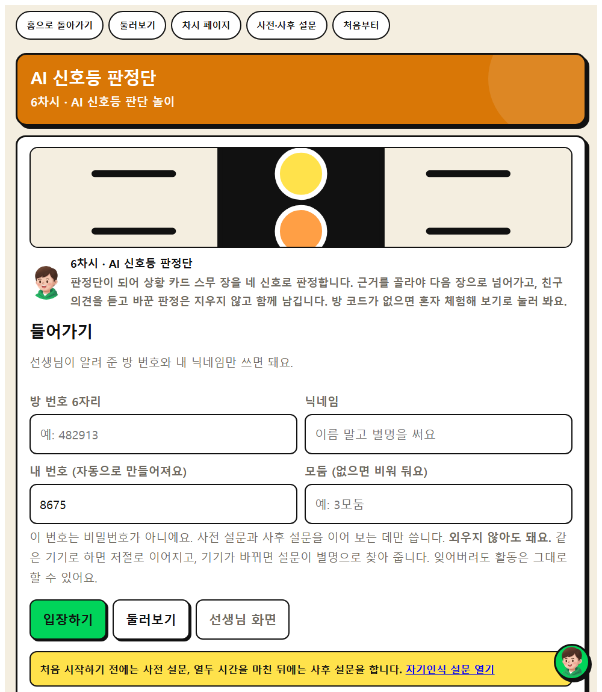
6차시AI 신호등 판정단AI 신호등 판단 놀이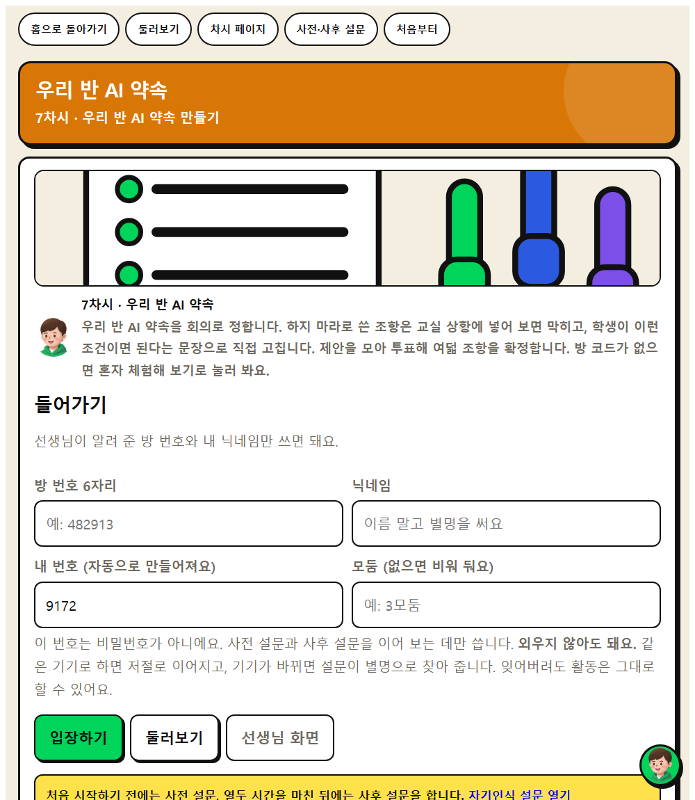
7차시우리 반 AI 약속우리 반 AI 약속 만들기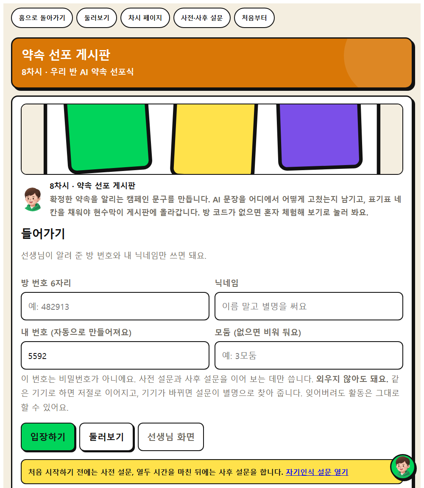
8차시약속 선포 게시판우리 반 AI 약속 선포식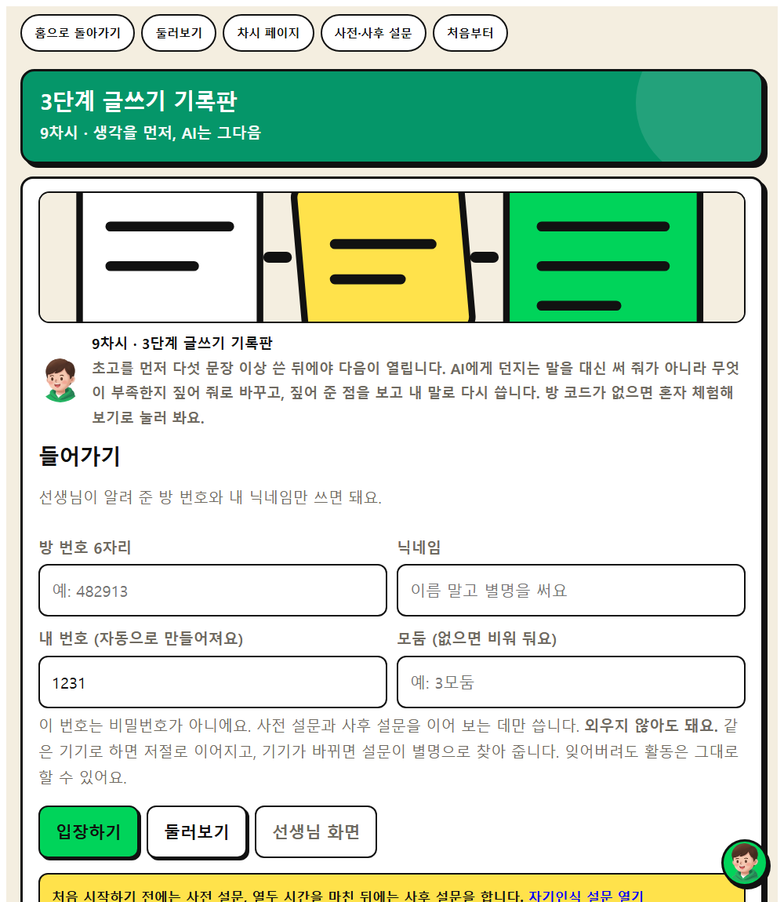
9차시3단계 글쓰기 기록판생각을 먼저, AI는 그다음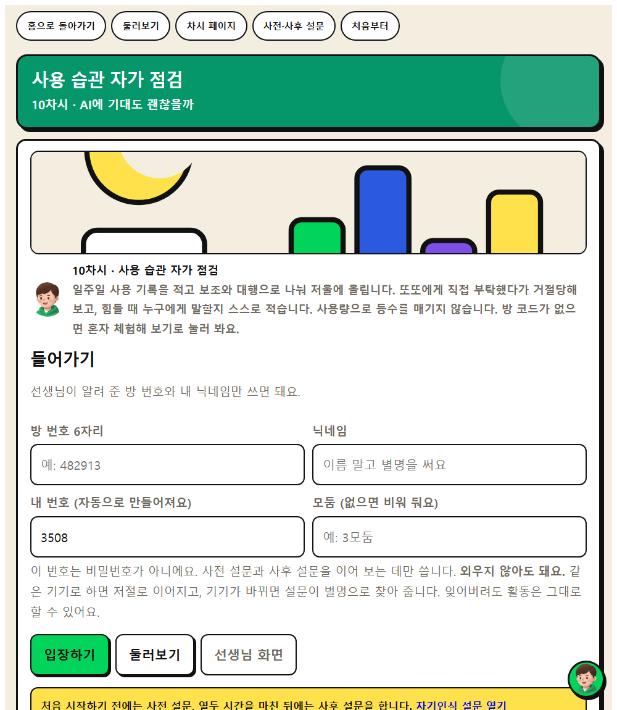
10차시사용 습관 자가 점검AI에 기대도 괜찮을까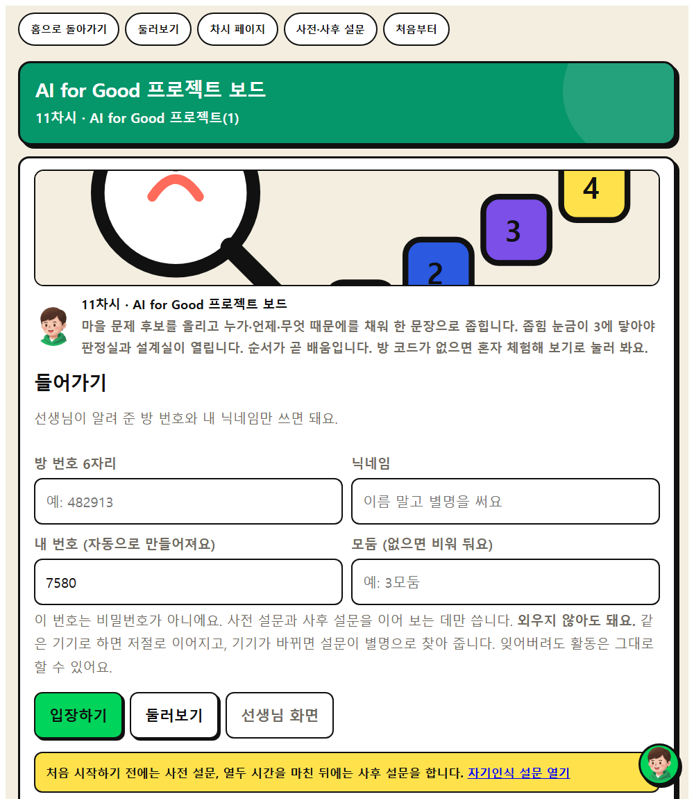
11차시AI for Good 프로젝트 보드AI for Good 프로젝트(1)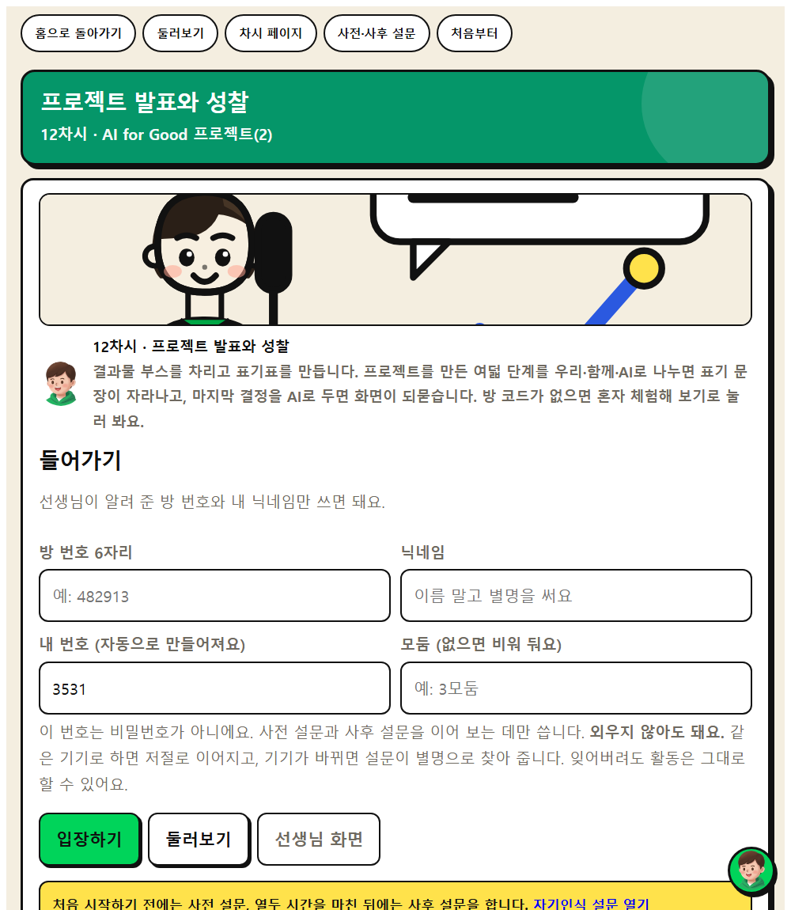
12차시프로젝트 발표와 성찰AI for Good 프로젝트(2)